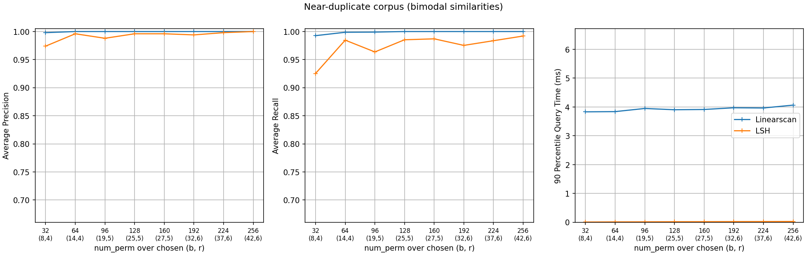
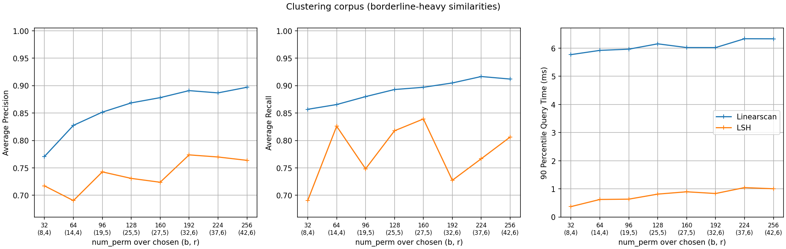
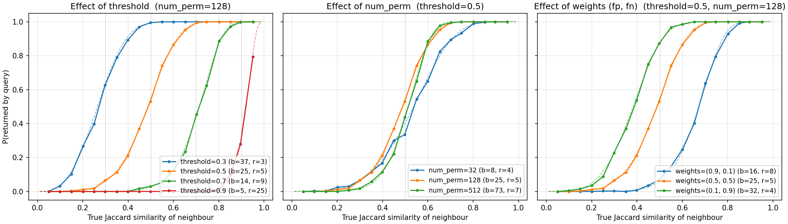

MinHash LSH
Suppose you have a very large collection of sets. Given a query, which is also a set, you want to find sets in your collection that have Jaccard similarities above a certain threshold – and you want to answer many such queries. One way is to create a MinHash for every set, and at query time compute the Jaccard estimate between the query’s MinHash and every MinHash in the collection, returning the sets that meet the threshold.
The said approach is still an O(n) algorithm, meaning the query cost increases linearly with respect to the number of sets. A popular alternative is to use Locality Sensitive Hashing (LSH) index. LSH can be used with MinHash to achieve sub-linear query cost - that is a huge improvement. The details of the algorithm can be found in Chapter 3, Mining of Massive Datasets.
This package includes the classic version of MinHash LSH. It is important to note that the query does not give you the exact result, due to the use of MinHash and LSH. There will be false positives - sets that do not satisfy your threshold but returned, and false negatives - qualifying sets that are not returned. However, the property of LSH assures that sets with higher Jaccard similarities always have higher probabilities to get returned than sets with lower similarities. Moreover, LSH can be optimized so that there can be a “jump” in probability right at the threshold, making the qualifying sets much more likely to get returned than the rest.
from datasketch import MinHash, MinHashLSH
set1 = set(['minhash', 'is', 'a', 'probabilistic', 'data', 'structure', 'for',
'estimating', 'the', 'similarity', 'between', 'datasets'])
set2 = set(['minhash', 'is', 'a', 'probability', 'data', 'structure', 'for',
'estimating', 'the', 'similarity', 'between', 'documents'])
set3 = set(['minhash', 'is', 'probability', 'data', 'structure', 'for',
'estimating', 'the', 'similarity', 'between', 'documents'])
m1 = MinHash(num_perm=128)
m2 = MinHash(num_perm=128)
m3 = MinHash(num_perm=128)
for d in set1:
m1.update(d.encode('utf8'))
for d in set2:
m2.update(d.encode('utf8'))
for d in set3:
m3.update(d.encode('utf8'))
# Create LSH index
lsh = MinHashLSH(threshold=0.5, num_perm=128)
lsh.insert("m2", m2)
lsh.insert("m3", m3)
result = lsh.query(m1)
print("Approximate neighbours with Jaccard similarity > 0.5", result)
The Jaccard similarity threshold and the number of permutation
functions (num_perm) must both be set at initialization and cannot
be changed afterwards. You can, however, merge two MinHashLSH indexes
into a union index with the merge method, which makes MinHashLSH
useful in parallel processing:
# This merges the lsh1 with lsh2.
lsh1.merge(lsh2)
MinHash LSH does not support top-k queries – see
MinHash LSH Forest for that. And if your goal is finding sets
with high intersection with the query rather than high Jaccard
similarity, see MinHash LSH Ensemble. Other optional tuning
parameters are described in the datasketch.MinHashLSH API
documentation.
Benchmarks
What threshold and num_perm buy depends on where a corpus
places pairs relative to the threshold, so the benchmark below runs the
same experiment on two synthetic corpora at opposite extremes
(benchmark/indexes/lsh_synthetic_benchmark.py; queries are held out
of the index, the linear scan thresholds the MinHash estimate of every
indexed set, and the x-tick labels carry the (b, r) the optimizer
chose at each num_perm – identical for both corpora, since the
choice depends only on the threshold and num_perm):
a near-duplicate corpus, the deduplication shape: each query has 1–3 planted near-duplicates (Jaccard 0.6–0.95) among otherwise-disjoint sets, so no pair sits near the threshold of 0.5;
a clustering corpus, the borderline-heavy shape: 10,000 heavily overlapping sets spread pair similarities across the whole range (506 of the 1,000 queries have qualifying neighbours, a median of about 3,600 each, many of them borderline).


The figures share axes, and the same index behaves very differently:
Near-duplicate corpus. Precision and recall sit in the 0.92–1.0 band at every
num_perm: the threshold falls in an empty stretch of the similarity distribution, so the soft threshold has almost nothing to be wrong about. Buckets are nearly empty, so queries return in ~0.03 ms or less – over 100x faster than the linear scan.Clustering corpus. With similarity mass right at the threshold, the soft threshold’s errors show (LSH precision 0.69–0.77, recall 0.69–0.84), and neither improves monotonically with
num_perm: accuracy tracks the optimizer’s discrete(b, r)steps visible in the tick labels – each bump ofr(atnum_perm96 and 192) shifts the retrieval curve right, trading recall for precision, until the growingbpulls it back. Buckets are crowded, so query time rises with the band count (0.4 ms to about 1 ms), though it stays about 6x under the scan – whose cost, unlike the index’s, is linear in the collection size.
The next section explains the mechanics that produce both pictures.
Retrieval characteristics and parameter tuning
Internally, datasketch.MinHashLSH splits each signature’s
num_perm hash values into b bands of r values
(b * r <= num_perm); a stored set becomes a candidate for a query if
it agrees on all r values of at least one band. A set whose true
Jaccard similarity to the query is s is therefore returned with
probability
an S-curve that jumps from near 0 to near 1 around a similarity
determined by (b, r). The constructor searches all (b, r)
combinations to place this transition at your threshold, minimizing
the weighted false-positive area below it and false-negative area above
it. The figure below measures the actual retrieval probability with
neighbours planted at controlled similarities (solid) against the
\(P(s)\) curve for the chosen (b, r) (dashed) – they agree
closely. See benchmark/indexes/lsh_similarity_benchmark.py.

Probability that lsh.query returns a neighbour, as a function of
the neighbour’s true Jaccard similarity to the query.
Threshold (left panel). The optimizer trades bands for rows to move
the transition: at num_perm=128 it picks (b=37, r=3) for
threshold 0.3, (25, 5) for 0.5, (14, 9) for 0.7 and (5, 25)
for 0.9 – fewer, longer bands are more selective. Note the curve is a
soft threshold: sets slightly below it are still returned sometimes,
and sets slightly above it are occasionally missed.
num_perm (middle panel). More permutations allow finer (b, r)
choices, so the transition sharpens: at threshold 0.5, num_perm=32
(b=8, r=4) still returns some sets near similarity 0.2 and misses
some near 0.8, while num_perm=512 (b=73, r=7) is much closer to a
step function. The price is linear in num_perm: bigger signatures,
more hash tables, and proportionally slower inserts. Query cost grows
too in principle, but stays negligible next to a linear scan – in the
benchmark above the LSH query time remains well under a millisecond at
every num_perm.
weights (right panel). weights = (false_positive_weight,
false_negative_weight) skews the optimizer. Penalizing false negatives
((0.1, 0.9) -> b=32, r=4) shifts the curve left of the threshold:
borderline true neighbours are rarely missed, at the cost of more
below-threshold candidates. Penalizing false positives ((0.9, 0.1) ->
b=16, r=8) shifts it right: results are more precise, but borderline
neighbours are dropped. Use the former when you post-filter results
anyway, the latter when every returned candidate is expensive to verify.
Two further notes. You can bypass the optimizer entirely with
params=(b, r) to pin the curve yourself (threshold and
weights are then ignored). And because query returns candidates
– everything that collided in some band, unranked – applications that
need the threshold enforced exactly should verify candidates against the
query, e.g. with MinHash.jaccard or the exact similarity of the
original sets; the left tail of the curves above is precisely the set of
false candidates such a check removes.
MinHash LSH at scale
MinHash LSH supports using Redis as the storage layer for handling large indexes and providing optional persistence in a production environment. The Redis storage option can be configured using:
from datasketch import MinHashLSH
lsh = MinHashLSH(
threshold=0.5, num_perm=128, storage_config={
'type': 'redis',
'redis': {'host': 'localhost', 'port': 6379},
}
)
To insert a large number of MinHashes in sequence, it is advisable to use an insertion session. This reduces the number of network calls during bulk insertion.
data_list = [("m1", m1), ("m2", m2), ("m3", m3)]
with lsh.insertion_session() as session:
for key, minhash in data_list:
session.insert(key, minhash)
Note that querying the LSH object during an open insertion session may result in inconsistency.
MinHash LSH also supports a Cassandra cluster as a storage layer. Using a long-term storage for your LSH addresses all use cases where the application needs to continuously update the LSH object (for example when you use MinHash LSH to incrementally cluster documents).
The Cassandra storage option can be configured as follows:
from datasketch import MinHashLSH
lsh = MinHashLSH(
threshold=0.5, num_perm=128, storage_config={
'type': 'cassandra',
'cassandra': {
'seeds': ['127.0.0.1'],
'keyspace': 'lsh_test',
'replication': {
'class': 'SimpleStrategy',
'replication_factor': '1',
},
'drop_keyspace': False,
'drop_tables': False,
}
}
)
The parameter seeds specifies the list of seed nodes that can be contacted to connect to the Cassandra cluster. Options keyspace and replication specify the parameters to be used when creating a keyspace (if not already existing). If you want to force creation of either tables or keyspace (and thus DROP existing ones), set drop_tables and drop_keyspace options to True.
Like the Redis counterpart, you can use insert sessions to reduce the number of network calls during bulk insertion.
Connecting to Existing MinHash LSH
If you are using an external storage layer (e.g., Redis) for your LSH, you can share it across multiple processes. There are two ways to do it:
The recommended way is to use “pickling”. The MinHash LSH object is serializable so you can call pickle:
import pickle
# Create your LSH object
lsh = ...
# Serialize the LSH
data = pickle.dumps(lsh)
# Now you can pass it as an argument to a forked process or simply save it
# in an external storage.
# In a different process, deserialize the LSH
lsh = pickle.loads(data)
Using pickle allows you to preserve everything you need to know about the LSH such as various parameter settings in a single location.
Alternatively you can specify basename in the storage config when first creating the LSH. For example:
# For Redis.
lsh = MinHashLSH(
threshold=0.5, num_perm=128, storage_config={
'type': 'redis',
'basename': b'unique_name_6ac4fg',
'redis': {'host': 'localhost', 'port': 6379},
}
)
# For Cassandra.
lsh = MinHashLSH(
threshold=0.5, num_perm=128, storage_config={
'type': 'cassandra',
'basename': b'unique_name',
'cassandra': {
'seeds': ['127.0.0.1'],
'keyspace': 'lsh_test',
'replication': {
'class': 'SimpleStrategy',
'replication_factor': '1',
},
'drop_keyspace': False,
'drop_tables': False,
}
}
)
The basename will be used to generate key prefixes in the storage layer to uniquely identify data associated with this LSH. Thus, if you create a new LSH object with the same basename, you will be using the same underlying data in the storage layer associated with the old LSH.
If you don’t specify basename, MinHash LSH will generate a random string as the base name, and collision is extremely unlikely.
Asynchronous MinHash LSH at scale
This module may be useful if you want to process millions of text documents in streaming/batch mode using asynchronous RESTful API (for example, aiohttp) for clustering tasks, and maximize the throughput of your service.
We currently provide asynchronous MongoDB storage (python motor package) and Redis storage.
For sharing across different Python processes see MinHash LSH at scale.
The Asynchronous MongoDB storage option can be configured using:
Usual way:
from datasketch.aio import AsyncMinHashLSH
from datasketch import MinHash
_storage = {'type': 'aiomongo', 'mongo': {'host': 'localhost', 'port': 27017, 'db': 'lsh_test'}}
async def func():
lsh = await AsyncMinHashLSH(storage_config=_storage, threshold=0.5, num_perm=16)
m1 = MinHash(16)
m1.update('a'.encode('utf8'))
m2 = MinHash(16)
m2.update('b'.encode('utf8'))
await lsh.insert('a', m1)
await lsh.insert('b', m2)
print(await lsh.query(m1))
print(await lsh.query(m2))
lsh.close()
Context Manager style:
from datasketch.aio import AsyncMinHashLSH
from datasketch import MinHash
_storage = {'type': 'aiomongo', 'mongo': {'host': 'localhost', 'port': 27017, 'db': 'lsh_test'}}
async def func():
async with AsyncMinHashLSH(storage_config=_storage, threshold=0.5, num_perm=16) as lsh:
m1 = MinHash(16)
m1.update('a'.encode('utf8'))
m2 = MinHash(16)
m2.update('b'.encode('utf8'))
await lsh.insert('a', m1)
await lsh.insert('b', m2)
print(await lsh.query(m1))
print(await lsh.query(m2))
To configure Asynchronous MongoDB storage that will connect to a replica set of three nodes, use:
_storage = {'type': 'aiomongo', 'mongo': {'replica_set': 'rs0', 'replica_set_nodes': 'node1:port1,node2:port2,node3:port3'}}
To connect to a cloud Mongo Atlas cluster (or any other arbitrary mongodb URI):
_storage = {'type': 'aiomongo', 'mongo': {'url': 'mongodb+srv://<username>:<password>@<cluster>.example.com/<db>'}}
If you want to pass additional params to the Mongo client <https://pymongo.readthedocs.io/en/stable/api/pymongo/mongo_client.html> constructor, just put them in the mongo.args object in the storage config (example usage to configure X509 authentication):
_storage = {
'type': 'aiomongo',
'mongo':
{
...,
'args': {
'ssl': True,
'ssl_ca_certs': 'root-ca.pem',
'ssl_pem_passphrase': 'password',
'ssl_certfile': 'certfile.pem',
'authMechanism': "MONGODB-X509",
'username': "username"
}
}
}
To build an index over a large number of MinHashes with an asynchronous insertion session:
from datasketch.aio import AsyncMinHashLSH
from datasketch import MinHash
def chunk(it, size):
it = iter(it)
return iter(lambda: tuple(islice(it, size)), ())
_chunked_str = chunk((random.choice(string.ascii_lowercase) for _ in range(10000)), 4)
seq = frozenset(chain((''.join(s) for s in _chunked_str), ('aahhb', 'aahh', 'aahhc', 'aac', 'kld', 'bhg', 'kkd', 'yow', 'ppi', 'eer')))
objs = [MinHash(16) for _ in range(len(seq))]
for e, obj in zip(seq, objs):
for i in e:
obj.update(i.encode('utf-8'))
data = [(e, m) for e, m in zip(seq, objs)]
_storage = {'type': 'aiomongo', 'mongo': {'host': 'localhost', 'port': 27017, 'db': 'lsh_test'}}
async def func():
async with AsyncMinHashLSH(storage_config=_storage, threshold=0.5, num_perm=16) as lsh:
async with lsh.insertion_session(batch_size=1000) as session:
fs = (session.insert(key, minhash, check_duplication=False) for key, minhash in data)
await asyncio.gather(*fs)
To bulk-remove keys with an asynchronous delete session:
from datasketch.aio import AsyncMinHashLSH
from datasketch import MinHash
def chunk(it, size):
it = iter(it)
return iter(lambda: tuple(islice(it, size)), ())
_chunked_str = chunk((random.choice(string.ascii_lowercase) for _ in range(10000)), 4)
seq = frozenset(chain((''.join(s) for s in _chunked_str), ('aahhb', 'aahh', 'aahhc', 'aac', 'kld', 'bhg', 'kkd', 'yow', 'ppi', 'eer')))
objs = [MinHash(16) for _ in range(len(seq))]
for e, obj in zip(seq, objs):
for i in e:
obj.update(i.encode('utf-8'))
data = [(e, m) for e, m in zip(seq, objs)]
_storage = {'type': 'aiomongo', 'mongo': {'host': 'localhost', 'port': 27017, 'db': 'lsh_test'}}
async def func():
async with AsyncMinHashLSH(storage_config=_storage, threshold=0.5, num_perm=16) as lsh:
async with lsh.insertion_session(batch_size=1000) as session:
fs = (session.insert(key, minhash, check_duplication=False) for key, minhash in data)
await asyncio.gather(*fs)
async with lsh.delete_session(batch_size=3) as session:
fs = (session.remove(key) for key in keys_to_remove)
await asyncio.gather(*fs)
For AsyncMinHashLSH with redis, put your redis configurations in the storage config under the key redis.
_storage = {'type': 'aioredis', 'redis': {'host': '127.0.0.1', 'port': '6379'}}
The redis key in _storage is passed to redis.Redis directly, which means you can pass custom Redis arguments yourself.